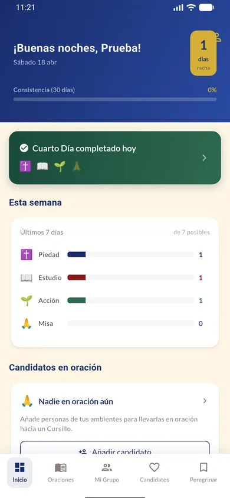
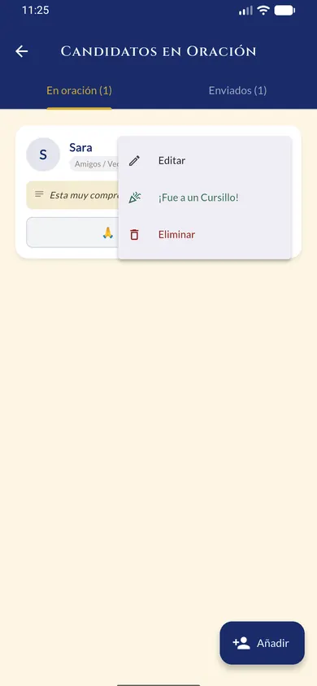

☀️
Trípode diario
Oración, estudio y acción organizados de forma clara para que el camino no se quede en intención.
Todo lo esencial está dentro de Peregrino APP: oración, Trípode, comunidad y un camino claro para seguir avanzando a tu ritmo. Empieza gratis y, si lo necesitas, da el siguiente paso con Palmero, Bordón o Apóstol.
Lo esencial es gratis para siempre. Disponible actualmente para Android.
Un vistazo a Peregrino: tu día de un golpe de vista, los rezos guiados y la vida de tu grupo, siempre a mano.


No es una colección de pantallas: es una ayuda real para sostener la oración, el hábito y la comunidad en medio del ritmo normal de la vida.
Oración, estudio y acción organizados de forma clara para que el camino no se quede en intención.
Lectura en voz alta y manos libres: reza el Rosario, el Vía Crucis o la Hora Apostólica mientras conduces, caminas o descansas, sin pelearte con la pantalla.
Candidatos y Reunión de Grupo para recordar que este camino también se sostiene en comunidad.
Peregrino no te pide más tiempo del que tienes. Te acompaña en el coche, en la cocina o antes de dormir, para que rezar no sea una tarea más, sino un respiro al que volver.
Sin ruido y sin distracciones: solo lo que necesitas para no perder el hilo del Cuarto Día y volver cada día con un poco más de paz.
Lo esencial es gratis para siempre. Y si quieres una experiencia más acompañada, estos son los tres niveles que desbloquean funciones concretas dentro de la app.
El primer paso: tu aportación ayuda a que Peregrino llegue más lejos.
El apoyo para no perder el hilo del Cuarto Día y cuidar a tu grupo.
Por muy poco más que Bordón, tienes la app entera —hoy y todo lo que venga— con las dos grandes devociones del Cursillo en voz.
Son compras únicas (pago único), no suscripciones, gestionadas por Google Play. Si cambias de dispositivo, usa «Restaurar compras».
Si Peregrino APP te ayuda, puedes sostener su desarrollo con una aportación libre. Es un gesto voluntario y separado de los niveles de la app.
Contenido complementario para conocer mejor la app, el proyecto y su contexto.
Guía práctica para empezar a usar Peregrino APP.
Abrir manualLa visión de fondo del proyecto y el sentido del Cuarto Día.
Leer manifiestoUna invitación a compartir la fe también en el entorno digital.
Ver páginaUna explicación breve para quienes se acercan por primera vez.
Abrir contenidoUna ayuda para reforzar la dimensión comunitaria del camino.
Abrir contenidoUna puerta de entrada para quienes desean dar ese paso.
Abrir contenidoDescarga Peregrino APP y empieza por lo esencial. Si con el tiempo quieres una experiencia más acompañada, ya tendrás claro cuál es tu siguiente paso.